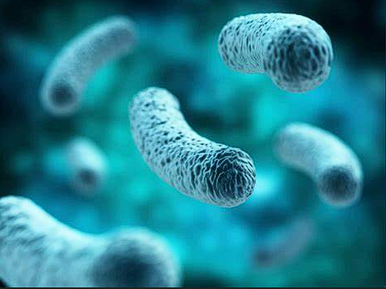

Planet Gaia Derinkuyu
- The life hidden within the dark
Introduction:
Gaia Derinkuyu is a hollowed planet filled with liquid water and surface is covered with
Volcanic
rocks and Ice. Due to the lack of atmosphere and extreme thin air life may seem impossible
here, but the nature works in a mysterious way under the shed.
Long distance from its star "Sidus
Ignis" keeps it cold while the Volcanic surface carry the heat to the deep water
body, maintaining the temperature of the planet (52°C at day to -38°C at night). The
planet is also known for its rich minerals and unique combination magnetic and centrifugal
force which gives it's interior a unique shape.
Namesake:
Gaia Derinkuyu is a name that combines two significant elements:
Gaia: This is a Greek goddess of the Earth. In Greek mythology, Gaia is considered
the mother of all living things. Her name is often associated with the Earth itself, its
natural processes, and its nurturing qualities.
Derinkuyu: This is a Turkish word meaning "deep well." It refers to the underground
city of Derinkuyu in Cappadocia, Turkey. This ancient city is known for its extensive
network of tunnels, chambers, and underground structures, which were used as a refuge and a
place of habitation.
Together, the name Gaia Derinkuyu reflects the planet's connection to the life and the
darkness of its hidden depths.
Size and Distance:
Gaia Derinkuyu is a relatively small planet compared to others in the solar system. It has
a radius of approximately 5,134 kilometers, slightly smaller than Earth.
The planet is located at a distance of about 1.55 astronomical units (AU) from its
star, Sidus Ignis. This distance places it within the habitable zone of the star, where
conditions are suitable for the presence of liquid water.
Want to dig up some more information? Check out the planet
structure
⛏️
Potential for Life:
Despite its harsh conditions, Gaia Derinkuyu has been the subject of scientific interest due
to its potential for harboring life. The presence of liquid water, a stable temperature
range, and a variety of minerals make it a promising candidate for life to exist.
The bacteria like living planted their roots in the deep water body and the volcanic rocks.
The microorganisms are known to survive in extreme conditions and may have adapted to the
unique environment of Gaia Derinkuyu and using Chemosynthesis to produce energy and
survive.
To know more about the life and ecosystem of Gaia Derinkuyu, Bring in the microscope...
üî¨
Orbit and Rotation:
Gaia Derinkuyu has an elliptical orbit around its star, Sidus Ignis. The planet takes
approximately 625 Earth days to complete one orbit, resulting in a year that is shorter than
that of Earth.
The planet also has a slow rotation on its axis, taking about 30 hours to complete one full
rotation. Despite the slow rotation, the greenhouse filled atmosphere keeps the temperature
between -8 to 22C (with an average of 10C).
Want to deep dive?
Want to learn about Life and Ecosystem?
Check out here...
ü¶†
Or, more interested about the planet itself?
Lets find out... üåê

Explore The Planet
- But under the ocean
Dive in before reading
Controls:
| Key | Action |
|---|---|
| W | Move Forward |
| S | Move Backward |
| A | Move Left |
| D | Move Right |
| Space | Move Up |
| Ctrl | Move Down |
Planet Gaia Derinkuyu
- The life hidden within the dark
Planet Gaia Derinkuyu
- The life hidden within the dark
A biofilm is a syntrophic community of microorganisms in which cells stick to each other and often also to a surface. These adherent cells become embedded within a slimy extracellular matrix that is composed of extracellular polymeric substances. The cells within the biofilm produce the EPS components, which are typically a polymeric combination of extracellular polysaccharides, proteins, lipids and DNA. Because they have a three-dimensional structure and represent a community lifestyle for microorganisms, they have been metaphorically described as "cities for microbes".
Some species of bacteria, including pathogens such as Listeria monocytogenes, Escherichia coli, Campylobacter jejuni, and Salmonella, are capable of forming biofilms on surfaces of foods and food processing equipment. They pose a hazard to the food industry because they are difficult to remove and highly resistant to conventional cleaning and sanitising agents. Biofilms can be harder to remove than planktonic cells (individual cells suspended in media) and may therefore pose a more significant food safety risk.
A biofilm is a thin layer of densely packed microbial cells encapsulated within a polymer matrix of proteins, nucleic acids, and polysaccharides. It can be composed of cells of a single species or multiple species.
It is formed in five stages:
- Bacterial cells attach reversibly to a surface via van der Waals forces, hydrophobic interactions, or electrostatic interactions;
- They excrete an extracellular polymeric substance that increases the adhesion and makes the attachment irreversible;
- Microcolonies begin to form and the biofilm begins to mature;
- The biofilm continues to mature and becomes a three-dimensional structure with channels running between clusters of cells for delivery of water and nutrients and removal of waste;
- Cells break off from the mature structure to form new biofilms.
Biofilms offer benefits to bacteria, protecting them from the effects of antimicrobial compounds, chemical stresses, and physical stresses; decreasing the potential for dehydration; and facilitating the exchange of nutrients, metabolites, and genetic material. The cells communicate with each other by a signalling process known as quorum sensing, which allows the bacteria to function for the benefit of all the cells within the biofilm.
Biofilms consisting of multiple species rather than a single species present a more difficult hurdle for food processing plants. Listeria monocytogenes, Salmonella species, and Bacillus species can exist in the same biofilm, and organisms that have the ability to attach and form extra-tough biofilms may host deadly, drug-resistant organisms that may not have the ability to form biofilms at all. Close attention should be paid to understanding how spore formers such as Bacillus and Clostridium may replicate and sporulate within the same biofilm. A combination of a protective biofilm and sporulation ensures that an organism is even more resistant to heat, sanitizers, or any other treatment than ever before, and multiple-species biofilms can quickly obtain new organisms with multiple drug resistances. The ability to transfer or pick up genes that allow for drug resistances (e.g., methicillin-resistant Staphylococcus aureus) represent a more stable, more resistant biological hazard.
Several chemical reactions are involved in the biofilm formation process in bacteria. Here are some key reactions:
-
Synthesis of Extracellular Polymeric Substances
(EPS)
-
Polysaccharide synthesis:
Bacteria synthesize polysaccharides from simple sugars
through enzymatic reactions. For example, glucose
molecules are polymerized to form glucans.
The general reaction can be represented as:
n(Glucose) C6H12O6 → Glucan(C6H10O5)n + nH2O
Examples of bacteria : Leuconostoc Lactis,Lactobacillus species, - Protein production Bacteria produce various proteins that are secreted into the EPS matrix. These proteins are synthesized through transcription and translation processes.
-
Polysaccharide synthesis:
Bacteria synthesize polysaccharides from simple sugars
through enzymatic reactions. For example, glucose
molecules are polymerized to form glucans.
-
Quorum Sensing
-
Signalling molecule production: Bacteria produce and release signalling molecules called autoinducers. For example, in Gram-negative bacteria,

acyl-homoserine lactones (AHLs) are synthesised from S-adenosylmethionine (SAM) and fatty acid precursors.
-
Production of Signaling Molecules:
-
Autoinducers: Bacteria produce signaling molecules called autoinducers. In Gram-negative bacteria, these are often acyl-homoserine lactones (AHLs).
-
Chemical Reaction: The synthesis of AHLs involves the enzyme LuxI, which catalyzes the reaction between S-adenosylmethionine (SAM) and a fatty acid.
SAM+Fatty AcidLuxI​AHL+Methylthioadenosine (MTA)
-
-
Signal reception and response: When the concentration of signalling molecules reaches a threshold, they bind to specific receptors, triggering a cascade of reactions that alter gene expression and promote biofilm formation.
-
Binding: The autoinducer binds to the receptor, forming a complex.
-
Gene Expression: This complex then binds to the promoter regions of specific genes, activating or repressing their transcription.
AHL+LuxR→AHL-LuxR Complex
AHL-LuxR Complex→Gene Activation/Repression
-
-
EPS Degradation and Dispersal:
-
Enzymatic degradation:
-
DNAes: These enzymes hydrolyze DNA within the EPS matrix. These enzymes hydrolyze DNA within the EPS matrix. DNA+H2O DNaseNucleotides
-
Proteases: These enzymes break down proteins into peptides and amino acids. Protein+H2OProteasePeptides+Amino Acids
-
Polysaccharide Lyases: These enzymes cleave polysaccharides by breaking glycosidic bonds. PolysaccharidePolysaccharide LyaseOligosaccharides+Monosaccharides
Enzymes such as DNases, proteases, and polysaccharide lyases break down the components of the EPS matrix, facilitating the release of bacteria from the biofilm.
Enzymatic degradation of the EPS (extracellular polymeric substances) matrix involves several types of enzymes, each targeting specific components of the matrix. Here are some general chemical reactions for the enzymes you mentioned:
These are the key reactions that occur in biofilms..
Roles in Chemosynthesis
Biofilms play a significant role in chemosynthesis, particularly in environments where microbial communities thrive. Here are some key influences:
-
Enhanced Stability: Biofilms provide a stable environment for chemosynthetic bacteria, protecting them from harsh conditions and allowing them to maintain their metabolic activities
-
Nutrient Concentration: The extracellular polymeric substances (EPS) in biofilms can trap and concentrate nutrients, making them more readily available for chemosynthetic processes
-
Microbial Interactions: Biofilms facilitate close interactions between different microbial species, which can enhance the efficiency of chemosynthesis through synergistic relationships
-
Protection from Toxins: The biofilm matrix can protect chemosynthetic bacteria from toxins and other harmful substances, ensuring their survival and continued metabolic activity
-
Environmental Adaptation: Biofilms allow chemosynthetic bacteria to adapt to various environmental conditions by providing a controlled microenvironment
These factors collectively enhance the efficiency and sustainability of chemosynthesis in biofilm-associated microbial communities.
Life-Cycle

-
An introduction to the biofilm life cycle:
- Free-floating, or planktonic, bacteria encounter a submerged surface and within minutes can become attached. They begin to produce slimy extracellular polymeric substances (EPS) and to colonize the surface.
- EPS production allows the emerging biofilm community to develop a complex, three-dimensional structure that is influenced by a variety of environmental factors. Biofilm communities can develop within hours.
- Biofilms can propagate through detachment of small or large clumps of cells, or by a type of “seeding dispersal” that releases individual cells. Either type of detachment allows bacteria to attach to a surface or to a biofilm downstream of the original community.
In a world without sunlight, life can still thrive through a process called chemosynthesis. This process allows organisms to produce energy by using chemical reactions, rather than relying on sunlight as in photosynthesis. Here’s how energy circulation and life can be sustained in such an environment
Chemosynthesis involves bacteria and other microorganisms using chemical energy to convert carbon molecules (like carbon dioxide or methane) into organic matter. This typically occurs in environments such as deep-sea hydrothermal vents or cold seeps, where sunlight cannot penetrate.
-
Key Chemical Reactions
-
Hydrogen Sulfide Oxidation:
CO2 + 4H2S + O2 → CH2O + 4S + 3H2O
Here, bacteria use hydrogen sulfide (H2S) and oxygen (O2) to produce organic molecules (CH2O), sulfur (S), and water (H2O). -
Methane Oxidation:
CH4 + O2 → CO2 + H2O
Methane (CH4) is oxidized to carbon dioxide (CO2) and water (H2O), providing energy for bacteria.
Energy Circulation
-
Tubeworms: These organisms have symbiotic relationships with chemosynthetic bacteria that live inside them, providing nutrients directly to the tubeworms

-
Crustaceans and Fish: These animals feed on chemosynthetic bacteria or other organisms that have consumed these bacteria.
In these ecosystems, chemosynthetic bacteria form the base of the food web. They convert inorganic molecules into organic matter, which is then consumed by other organisms. For example:
-
Life in a Chemosynthetic World
-
Bacteria and Archaea: These microorganisms are the primary producers, converting chemical energy into organic matter.
-
Higher Organisms: Animals such as tubeworms, clams, shrimp, and crabs rely on chemosynthetic bacteria for food, either directly or indirectly.

Beyond Sunlight:
An Aquatic Chemosynthetic World
- 2024 NASA Space Apps Challenge
References for Project
| Topic | Link |
|---|---|
| BioFilm |
Investigations (by NASA)
Growth and Control (by NASA) NASA Marshall Researchers Battle Biofilm in Space (by NASA) Mitigation and use of biofilms in space |
| Ocean World | Ocean Worlds around us (By Nasa) |
| Planet 3D texture base | Enhanced Color
Mercury Map (by NASA) Sun and Core 3D texture |
| Land Rover |
Mars
Perseverance Rover, 3D Model (by NASA) Perseverance rover design (from wikimedia) |
| Submerive Rover |
Physter
Underwater Smart ROV
"Physter Underwater Smart ROV" (https://skfb.ly/o6IpD) by TheRedMan is licensed under CC Attribution-NonCommercial-ShareAlike (http://creativecommons.org/licenses/by-nc-sa/4.0/). |
| Stock Video |
From Nature Relaxation Films
From Relaxation Film From ElderFox Documentaries Natural World Facts |
{kind=link}

Team Kaiyo
A group of passionate individuals working together to explore the unknown, to discover the hidden and to create the unimaginable.
Team Members